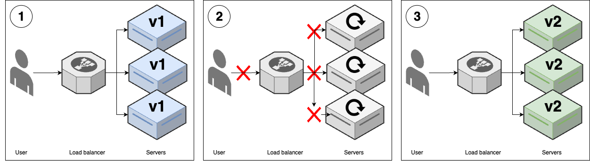
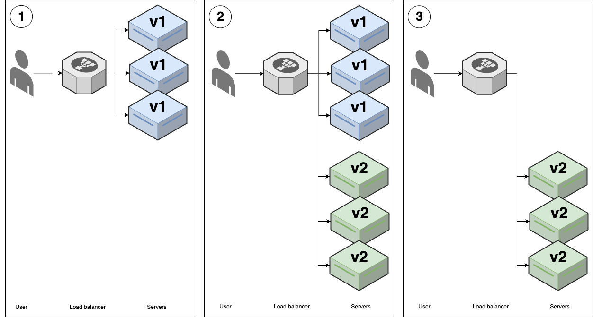
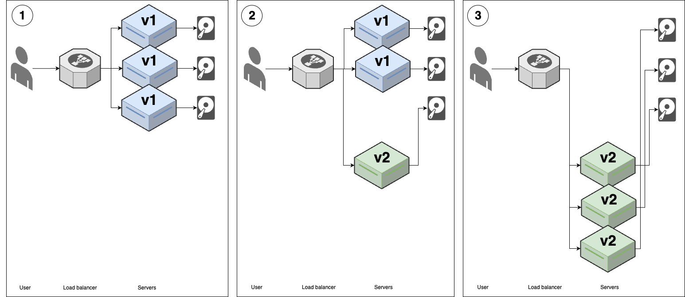
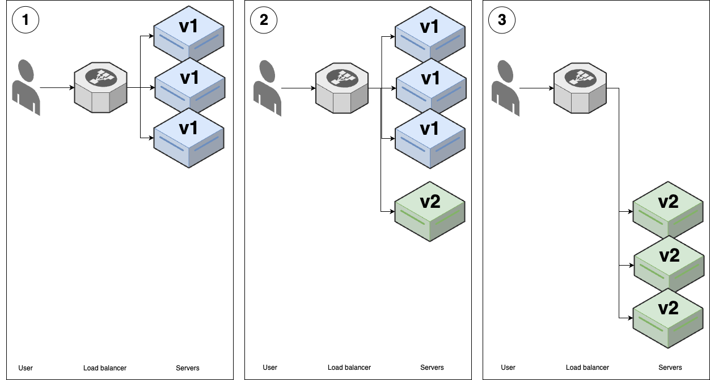
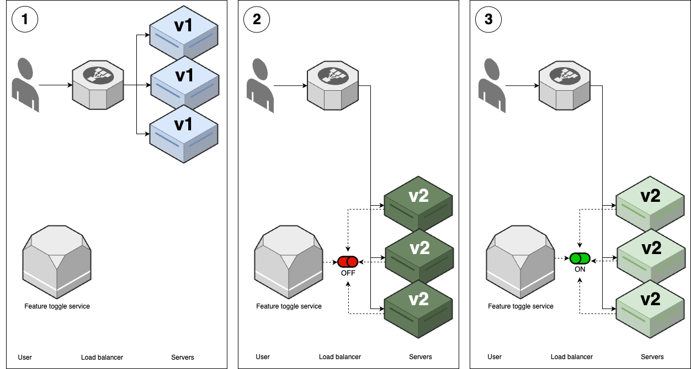
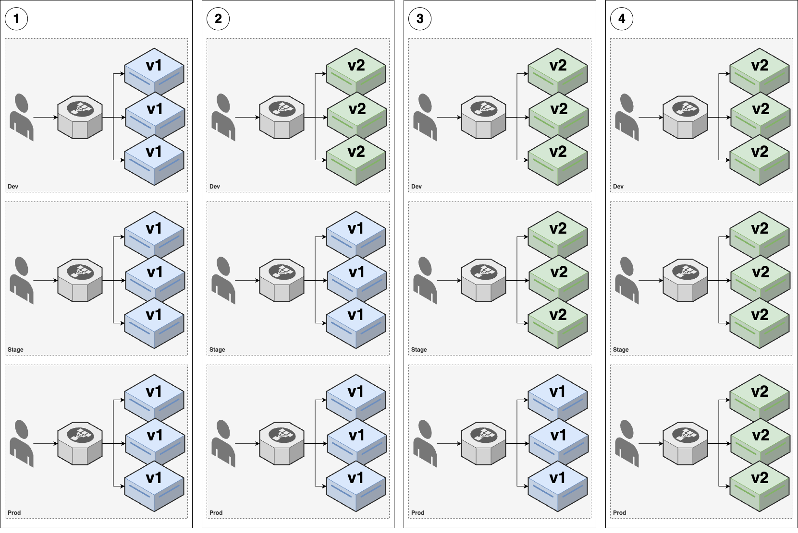

Part 5. How to Set Up Continuous Integration (CI) and Continuous Delivery (CD)
In Part 4, you learned several key tools and techniques that help developers work together, including version control, build systems, and automated tests. But merely having a collection of tools and techniques is not enough: you also need to know how to put them together into an effective software delivery lifecycle (SDLC). As a reminder, the SDLC needs to solve the following problems:
- Code access
-
All the developers on your team need a way to access the same code so they can all collaborate on it.
- Integration
-
As multiple developers make changes to the same code base, you need some way to integrate their changes, handling any conflicts that arise, and ensuring that no one’s work is accidentally lost or overwritten.
- Correctness
-
It’s hard enough to make your own code work, but when multiple people are modifying that code at the same time, you need to find a way to prevent constant bugs and breakages from slipping in.
- Release
-
Getting a codebase working is great, but as you may remember from the Introduction, code isn’t done until it’s generating value for your users and your company, which means you need a way to release the changes in your codebase on a periodic basis.
Now that you have the ingredients for solving these problems, in this blog post, you’ll learn how to put these ingredients together. To do this, you will first learn about continuous integration (CI) and then continuous delivery (CD). The combination of the two, CI/CD, is a central part of the SDLC of all the companies you read about in What world-class software delivery looks like that have world-class software delivery practices.
Let’s start with CI.
Continuous Integration (CI)
What is continuous integration? It may be easier to understand it by comparing it with its opposite, late integration.
Imagine you’re responsible for building the International Space Station (ISS), which consists of dozens of components, as shown in Figure 39.

Each component will be assigned to a team from a different country, and it’s up to you to decide how you will organize these teams. You have two options:
- Option 1: late integration
-
Come up with a design for all the components up front and then have each team go off and work on their component in complete isolation until it’s finished. When all the teams are done, launch all the components into outer space, and try to put them together at the same time.
- Option 2: continuous integration
-
Come up with an initial design for all the components and then have each team go off and start working. As they make progress, they regularly test each component with all the other components and update the design if there are any problems. As components are completed, you launch them one at a time into outer space, and assemble them incrementally.
How do you think option #1 is going to work out? In all likelihood, attempting to assemble the entire ISS at the last minute will expose a vast number of conflicts and design problems. Team A thought team B would handle the wiring while team B thought team A would do it; all the teams used the metric system, except one; no one remembered to install a toilet. Unfortunately, as everything has been fully built and is already floating in outer space, it will be expensive and difficult to go back and fix things.
Option 1 may sound ridiculous, but this is exactly the way in which many companies build software. Developers work in totally isolated feature branches in their version control system for weeks or months at a time and then, at the very last minute, when a release rolls around, they try to merge all the feature branches together. This process is known as late integration, and it often leads to disaster, as shown in Figure 40.
When you don’t merge your code together for long periods of time, you end up with horrible merge conflicts: two teams modified the same file, but in incompatible ways; one team has made changes in a file that another team deleted entirely; one team did a giant refactor to remove all usages of a deprecated service, but the other teams have introduced dozens of new usages of that service; and so on. All of these conflicts lead to bugs and problems that take days or weeks to stabilize, turning the release process into a long, drawn-out nightmare.
A better approach, as described in option #2, is continuous integration (CI), which is software development practice with the following key property:
|
Tip
|
Key takeaway #1
All developers merge all their work together on a regular basis: typically daily or multiple times per day. |
The key benefit of CI is that it exposes problems with your work earlier in the process, before you’ve gone too far in the wrong direction, and allows you to make improvements incrementally.
The most common way to implement continuous integration is to use a trunk-based development model, where developers
do all of their work on the same branch, typically main or master or trunk, depending on what
your VCS calls it; I’ll mostly refer to this branch as main in this blog post series. With trunk-based development,
you no longer have long-lived feature branches. Instead, you create short-lived branches, that typically last from a
few hours to a few days, and you open pull requests to get your branch merged back into main on a regular basis.
It may seem like having all developers work on a single branch couldn’t possibly scale, but the reality is that it might be the only way to scale. LinkedIn moved off of feature branches and onto trunk-based development as part of Project Inversion, which was essential for scaling the company from roughly 100 developers to over 1,000. Facebook uses trunk-based development for thousands of developers.[35] Google uses trunk-based development for tens of thousands of developers, and has shown it can scale to 2+ billion lines of code, 86TB of source data, and around 40,000 commits per day.[36]
If you’ve never used trunk-based development, it can be hard to imagine how it works. The same questions come up again and again:
-
Wouldn’t you have merge conflicts all the time?
-
Wouldn’t the build always be broken?
-
How do you make large changes that take weeks or months?
In the next three sections, I’ll address each of these questions, showing the tools and techniques companies use to deal with them, and then walk you through an example of how to set up some of these continuous integration tools and techniques yourself.
Dealing with merge conflicts
The first question that newbies to trunk-based development often ask is, won’t you be dealing with merge conflicts all the time? After all, with feature branches, each time you merge, you get days or weeks of conflicts to resolve, but at least you only have to deal with that once every few weeks or months. Whereas with trunk-based development, wouldn’t you have to fight with merge conflicts many times per day?
As it turns out, the reason that feature branches lead to painful merge conflicts is precisely because those feature branches are long-lived. If your branches are short-lived, the odds of merge conflicts are much lower. For example, imagine you have a repo with 10,000 files, and two developers working on changes in different branches. After one day, perhaps each developer has changed 10 files; if they try to merge the branches back together, the chances that some of those 20 files overlap, out of 10,000, are pretty low. But if those developers worked in those branches for three months, and changed hundreds of files in each branch during that time, then the chances that some of those files overlap and conflict are much higher.
Moreover, even if there are a merge conflicts, it’s much easier to deal with them if you merge regularly. If you’re merging two branches that are just a day old, the conflicts will be relatively small, as you can’t change all that much code in just a few days, and the code will still be top-of-mind, as worked on it within the last 24 hours. On the other hand, if you’re merging code that is several months old, then the conflicts will be larger, as you can make a lot of changes in a few months, and you’re less likely to remember what the changes are about, as you may have worked on them months ago.
The most important thing to understand is this: When you have multiple developers working on a single codebase at the same time, merge conflicts are unavoidable, so the question isn’t how to avoid merge conflicts, but how to make those merge conflicts as painless to deal with as possible. And that’s one of many places in software delivery where Martin Fowler’s quote applies:
If it hurts, do it more often.
Frequency Reduces Difficulty
Merge conflicts hurt. The way to make it hurt less, oddly enough, is to merge more often.
Preventing breakages with self-testing builds
The second question that newbies to trunk-based development often ask is, won’t you be dealing with breakages all the time? After all, with feature branches, each time you merge, it can take days or weeks to fix all the issues that come up and stabilize the release branch, but at least you only have to deal with that once every few weeks or months. Whereas with trunk-based development, wouldn’t you have to fight with breakages many times per day?
Have no fear: this is precisely where the automated testing practices you learned about in
Part 4 come to the rescue. Companies that practice CI and trunk-based development configure a
self-testing build that runs automated tests after every commit. This includes commits on any branch, so every time
a developer opens a pull request to merge a branch into main, you automatically run tests against their branch, and
show the test results directly in the pull request UI (you’ll see an example of how to set this up a little later in
this post). That way, code that doesn’t pass your test suite doesn’t get merged to main in
the first place. And if somehow some code does slip through that breaks main, then as soon as you detect it, the
typical solution is to revert that commit automatically. This way, you get main back into working condition quickly,
and the developer who merged in the broken code can redo their commit later, once they’ve fixed whatever caused the
breakage.
The most common way to set up a self-testing build is to run a CI server, which is a piece of software that integrates with your version control system to run various automations, such as your automated tests, in response to new commits, branches, and so on. There are many CI servers out there, including some solutions that you run yourself, such as Jenkins, TeamCity, Drone, and Argo, and some solutions that are managed services, such as GitHub Actions, CircleCi, and GitLab.
CI servers are such an integral part of continuous integration, that for many developers, the two terms are nearly synonymous. This is because a CI server and a good suite of automated tests completely changes how you deliver software:
Without continuous integration, your software is broken until somebody proves it works, usually during a testing or integration stage. With continuous integration, your software is proven to work (assuming a sufficiently comprehensive set of automated tests) with every new change—and you know the moment it breaks and can fix it immediately.
Continuous Delivery: Reliable Software Releases through Build, Test, and Deployment Automation (Addison-Wesley Professional).
Going from a default of broken to a default of working is a profound transformation. Instead of a multi-day merge process to prepare your code for release, your code is always in a releasable state—which means you can deploy whenever you want. To some extent, the role of a CI server is to act as a gatekeeper, protecting your code from any changes that jeopardize your ability to deploy at any time.
|
Tip
|
Key takeaway #2
Use a self-testing build after every commit to ensure your code is always in a working and deployable state. |
In What world-class software delivery looks like, you saw that companies with world-class software delivery processes are able to deploy thousands of times per day. Continuous integration—including a CI server and thorough automated test suite—is one of the key ingredients that makes this possible; you’ll see some of the other ingredients throughout this post.
Making large changes
The third question that newbies to trunk-based development often ask is, how do you handle changes that take a long time to implement? CI sounds great for small changes, but if you’re working on something that will take weeks or months—e.g., major new features or refactors—how can you merge your incomplete work on a daily basis without breaking the build or accidentally releasing unfinished features to users?
There are two approaches that you can use to resolve this:
|
Tip
|
Key takeaway #3
Use branch by abstraction and feature toggles to make large-scale changes while still merging your work on a regular basis. |
What are branch by abstraction and feature toggles? These two techniques are the focus of the next two sections.
Branch by abstraction
Branch by abstraction is a technique that allows you to make large-scale changes to your code incrementally, across many commits, without ever risking breaking the build or releasing unfinished work to users. For example, let’s say you have hundreds of modules in your codebase that use Library X, as shown in Figure 41:

You want to replace Library X with Library Y, but this will require updating hundreds of modules, which could take months. If you do this work in a feature branch, by the time you merge it back, there’s a good chance you’ll have merge conflicts with many of the updated modules, and it’s possible new usages will have shown up in the meantime, so you’d have even more work to do.
Instead of a feature branch, the idea with branch by abstraction is to keep working on main, but to introduce a new
abstraction into the codebase. What type of abstraction you use depends on your programming language: it might be an
interface, a protocol, a class, etc. The important thing is that (a) the abstraction initially uses Library X under the
hood, so there is no change in behavior and (b) it creates a layer of indirection between your modules and Library X,
as shown in Figure 42:
You can update your modules to use the abstraction incrementally, across many commits to main. There’s no hurry or
risk of breakage, as under the hood, the abstraction is still using Library X. After some time, all modules should be
using the abstraction, and you could even add an automated test that fails if anyone tries to use Library X directly.
At this point, you can start replacing Library X with Library Y, as shown in Figure 43:

Again, you can roll out this change incrementally, across many commits to main, integrating your work regularly to
minimize merge conflicts. You could also update your abstraction code to ensure that any new usages of the abstraction
get Library Y under the hood by default. Eventually, when you’re done updating all module usages, you can remove
Library X entirely, as shown in Figure 44:

Branch by abstraction is a great technique for doing large-scale refactors. But what if you need to introduce totally
new functionality? If that functionality takes weeks or months to implement, how can you merge it regularly into main
without accidentally releasing unfinished features to users? This is when you turn to the second approach, feature
toggles, as described next.
Feature toggles
The idea with feature toggles (AKA feature flags) is to wrap new functionality in conditionals that let you turn (toggle) those features on and off dynamically. For example, imagine that you wanted to take the Node.js sample app you’ve been using throughout this blog post series, and to update it to return a proper home page that is a little more interesting than the "Hello, World!" text. However, it’s going to take you several months to implement this new home page. The idea with a feature toggle is to add a conditional to your code as shown in Example 89 (you don’t need to actually make these code changes; this is just for demonstration purposes):
app.get('/', (req, res) => {
if (lookupFeatureToggle(req, "HOME_PAGE_FLAVOR") === "v2") { // (1)
res.send(newFancyHomepage()); // (2)
} else {
res.send('Hello, World!'); // (3)
}
});Here’s what this code does:
-
Use the
lookupFeatureTogglefunction to look up the value of the "NEW_HOME_PAGE" feature toggle. -
If the value of the feature toggle is "v2," send back the contents of the new home page as a response.
-
If the value of the feature toggle is anything else, send back the original "Hello, World!" text.
So what does the lookupFeatureToggle function do? Typically, this function will check if the feature toggle is
enabled by querying a dedicated feature toggle service, which is a service that can do the following:
- Store a feature toggle mapping
-
The mapping is from a feature toggle name (e.g, NEW_HOME_PAGE) to its value (e.g., true, false, or an arbitrary string like "v2").
- Look up feature toggles programmatically
-
You provide an API or SDK your apps can use to look up the current value of a feature toggle (e.g., the
lookupFeatureTogglefunction would use this SDK under the hood). - Update feature toggles without having to change code
-
You have some sort of web UI, API, or other mechanism that lets you quickly change the value of a feature toggle at any time—without having to update or deploy new code.
You could build your own feature toggle service around a database, or deploy an open source feature toggle service such as growthbook, Flagsmith, flagr, or OpenFeature, or you could use a managed feature toggle service such as Split, LaunchDarkly, ConfigCat, or Statsig.
It might not be obvious, but the humble if-statement, combined with a feature toggle check, unlocks a superpower: you
can now commit and regularly merge code, even before it’s done. If you wrap new features in a feature toggle check, as
long as the code is syntactically valid (which you can validate with simple automated tests), you can merge your new
feature into main long before that feature is done. That’s because, by default, feature toggles are off, so no users
will see this feature! This is what allows you to develop large new features while still practicing continuous
integration.
What’s even more surprising is that this is only one of the superpowers you get with feature toggles; you’ll see a number of others later in this blog post, in the continuous delivery section.
Example: set up automated tests for your app code with GitHub Actions
|
Note
|
Example Code
As a reminder, you can find all the code examples in the blog post series’s sample code repo in GitHub. |
Now that you understand the basics of continuous integration, let’s get a little practice setting up some of the technology that enables it: namely, a self-testing build. You added some automated tests in Section 4.3, so the goal is to run these tests automatically after each commit, and to show the results in pull requests. In Section 4.1.3, you pushed your code to GitHub, so to avoid introducing even more tools, let’s use GitHub Actions as the CI server that will run these tests.
Head into the folder where you’ve been working on the code samples for this blog post series and make sure you’re on
the main branch, with the latest code:
$ cd fundamentals-of-devops $ git checkout main $ git pull origin main
Next, create a new ch5 folder for this blog post’s code examples, and copy into ch5 the sample-app folder from Part 4, where you had a Node.js app with automated tests:
$ mkdir -p ch5 $ cp -r ch4/sample-app ch5/sample-app
With that done, create a new folder called .github/workflows:
$ mkdir -p .github/workflows $ cd .github/workflows
Inside the .github/workflows folder, create a file called app-tests.yml, with the contents shown in Example 90:
name: Sample App Tests
on: push # (1)
jobs: # (2)
sample_app_tests: # (3)
name: "Run Tests Using Jest"
runs-on: ubuntu-latest # (4)
steps:
- uses: actions/checkout@v2 # (5)
- name: Install dependencies # (6)
working-directory: ch5/sample-app
run: npm install
- name: Run tests # (7)
working-directory: ch5/sample-app
run: npm testWith GitHub Actions, you use YAML to define workflows, which are configurable automated processes that run one or more jobs in response to certain triggers. Here’s what the preceding workflow does:
-
The
onblock is where you define the triggers that will cause this workflow to run. The preceding code configures this workflow to run every time you do agit pushto this repo. -
The
jobsblock defines one or more jobs—automations—to run in this workflow. By default, jobs run sequentially, but you can also configure jobs that run concurrently, as well as creating dependencies and passing data between jobs. -
This workflow defines just a single job, which will run the automated tests for the sample app.
-
Each job runs on a certain type of runner, which is how you configure the hardware (CPU, memory) and software (operating system and dependencies) to use for the build. The preceding code uses a runner with the default hardware configuration (2 CPUs and 7GB of RAM, as of 2024) and a software configuration that has Ubuntu and a bunch of commonly used software engineering tools (including Node.js) pre-installed.[37]
-
Each job consists of a series of steps that are executed sequentially. The first step in this job runs another workflow via the
useskeyword. This is one of the best features of GitHub Actions: you can share and reuse workflows, including both public, open source workflows (which you can discover in the GitHub Actions Marketplace) and private, internal workflows within your own organization. The preceding code uses theactions/checkoutworkflow to check out the code for your repo (it callsgit cloneunder the hood). -
The second step in this job use the
runkeyword to execute shell commands. In particular, it runsnpm installin the ch5/sample-app folder to install the sample app’s dependencies. -
The third step in this job uses the
runkeyword to executenpm test, which runs the sample-app’s automated tests.
If all the steps succeed, the job will be marked as successful (green); if any step fails—e.g., npm test exits
with a non-zero exit code because one of the tests fails—then the job will be marked as failed (red).
To try it out, first commit and push the sample app and workflow code to your repo:
$ git add ch5/sample-app .github/workflows/app-tests.yml $ git commit -m "Add sample-app and workflow" $ git push origin main
Next, create a new branch called test-workflow to see this workflow in action:
$ git checkout -b test-workflow
Make a change to the sample app to intentionally return some text other than "Hello, World!", as shown in Example 91:
res.send('Fundamentals of DevOps!');Commit and push these changes to the test-workflow branch:
$ git add ch5/sample-app/app.js $ git commit -m "Change response text" $ git push origin test-workflow
After running git push, the log output will show you the GitHub URL to open a pull request. Open that URL in
your browser, fill out a title and description, and click "Create pull request." You should get a page that looks
something like Figure 45:
At the bottom of the pull request, you should see the "Sample App Tests" workflow has run: and, uh oh, looks like there’s an error. Click the Details link to the right of the workflow to see what went wrong. You should get a page that looks like Figure 46:
Aha! The automated test is still expecting the response text to be "Hello, World!" To fix this issue, update app.test.js to expect "Fundamentals of DevOps!" as a response, as shown in Example 92:
expect(response.text).toBe('Fundamentals of DevOps!');Commit and push these changes to the test-workflow branch:
$ git add ch5/sample-app/app.test.js $ git commit -m "Update response text in test" $ git push origin test-workflow
This will automatically update your open PR, and automatically re-run your tests. After a few seconds, if you go back to your browser and look at the PR, you should see the tests passing, as shown in Figure 47:
Congrats, you now have a self-testing build that will automatically run your app’s tests after every commit, and show you the results in every PR. Merge the PR, and let’s move on to adding automated tests for the infrastructure code.
|
Tip
|
Get your hands dirty
Here are a few exercises you can try at home to get a better feel for running automated app tests in CI:
|
Machine user credentials and automatically-provisioned credentials
Now that you’ve seen how to configure a CI server to run the sample app’s automated tests, you may want to update the
CI server to also run the infrastructure automated tests that you added in Part 4. In that
blog post, you added two types of automated tests for your infrastructure code: static analysis with
Terrascan and unit testing with OpenTofu’s test command. Since the latter type of test deploys real resources into a
real AWS account, you will need to give your automated tests a way to authenticate to AWS.
This is a somewhat tricky problem. When a human being needs to authenticate to a machine, you can rely on that human memorizing some sort of secret, such as a password. But what do you do when a machine, such as a CI server, needs to authenticate to another machine? How can that machine "memorize" some sort of secret without leaking that secret to everyone else? You’ll learn various approaches to solve this problem in Part 7.
For now, all you need to know is that you should never use a real user’s credentials to solve this problem. That is, do not use your own IAM user credentials, or your own GitHub personal access token, or any type of credentials from any human being in a CI server or other types of automation. Here’s why:
- Departures
-
Typically, when someone leaves a company, you revoke all their access. If you were using their credentials for automation, then that automation will suddenly break.
- Permissions
-
The permissions that a human user needs are typically different than a machine user.
- Audit logs
-
Most systems maintain an audit log that records who performed what actions in that system. These sorts of logs are useful for debugging and investigating security incidents—unless the same user account is used both by a human and automation, in which case, it’s harder to tell who did what.
- Management
-
You typically want multiple developers at your company to be able to manage the automations you set up. If you use a single developer’s credentials for those automations, then the other developers won’t be able to access that user account if they need to update the credentials or permissions.
So if you can’t use the credentials of a real user, what do you do? These days, there are two main options:
|
Tip
|
Key takeaway #4
Use machine user credentials or automatically-provisioned credentials to authenticate from a CI server or other automations. |
What are machine user credentials or automatically-provisioned credentials? These are the topics of the next two sections.
Machine user credentials
One way to allow automated tools to authenticate is to create a dedicated machine user, which is a user account that is only used for automation (not by any human user). You create the user, generate credentials for them (e.g., access keys), and copy those credentials into whatever tool you’re using (e.g., into GitHub).
Machine users have a number of advantages: they never depart your company; you can assign them just the permissions they need; no human ever logs in as a machine user, so they only show up in audit logs when used in your automations; and you can share access to a single machine user account across your team by using a secrets management tool (a topic you’ll learn more about in Part 7).
However, machine users also have some drawbacks: one drawback is that you have to copy their credentials around manually, which is tedious and error-prone; another drawback is that the credentials you’re copying are typically long-lived credentials, which don’t expire for a long time (if ever), so if these credentials are ever leaked, there is a long or even indefinite window of time during which they could be exploited.
With some tools, machine users are the best you can do, but these days, some systems support automatically-provisioned credentials, as described in the next section.
Automatically-provisioned credentials
A second way to allow automated tools to authenticate is to use automatically-provisioned credentials, which are credentials the system can generate automatically, without any need for you to manually create machine users or copy/paste credentials. This requires that the system you’re authenticating from (e.g. a CI server) and the system you’re authenticating to (e.g., AWS) have an integration between them that supports automatically-provisioned credentials.
You’ve actually seen one form of automatically-provisioned credentials already earlier in this blog post series: IAM roles. Some of the resources you’ve deployed in AWS, such as the EKS cluster in Part 3, used IAM roles to authenticate and make API calls within your AWS account (e.g., to deploy EC2 instances as EKS worker nodes). You didn’t have to create a machine user or manually manage credentials to make this work: instead, under the hood, AWS automatically provisioned credentials that the EKS cluster could use.
With IAM roles, the thing you’re authenticating from and the thing you’re authenticating to are both AWS, but there are also systems that support automatically-provisioned credentials across different companies and services. One of the most common is Open ID Connect (OIDC), which is an open protocol for authentication. Not all services support OIDC, so it’s not always an option, but in the cases where it is supported, it’s usually a more secure choice than machine user credentials, as OIDC gives you not only automatically-provisioned credentials (so no manual copy/paste), but also short-lived credentials that expire after a configurable period of time (e.g., one hour).
One place where OIDC is supported is between AWS and GitHub. To set up OIDC with AWS and GitHub, you configure your AWS account to trust an identity provider (IdP), such as GitHub, whose identity AWS can verify cryptographically (using a fingerprint you provide for GitHub), and then you can grant that provider permissions to assume specific IAM roles, subject to certain conditions: e.g., you can only use this IAM role from certain repos or branches.

Once you’ve set that up, Figure 48 shows the workflow for using OIDC to authenticate from GitHub to AWS:
-
[GitHub] Generate an OIDC token: Inside a GitHub Actions workflow, GitHub generates an OIDC token, which is a JSON Web Token: that is, a JSON object that contains claims—that is, data that GitHub is asserting—and a signature that can be cryptographically verified to prove the token really comes from GitHub. GitHub includes several claims, including information about what repo and branch the workflow is running in.
-
[GitHub] Call the
AssumeRoleWithWebIdentityAPI: The workflow then calls the AWSAssumeRoleWithWebIdentityAPI, specifying an IAM Role to assume, and passing the OIDC token to AWS as authentication. -
[AWS] Validate the OIDC token: AWS first validates the signature on the token to make sure it really came from GitHub, using a thumbprint you provide when setting up GitHub as an OpenID provider.
-
[AWS] Validate IAM role conditions: Next, AWS validates the conditions on the IAM role against the claims in the token, especially whether that particular repo and branch is allowed to assume the IAM role.
-
[AWS] Grant short-lived AWS credentials: If all the validations pass, AWS generates temporary AWS credentials that give you access to the IAM role’s permissions for a short period of time, and sends those back to GitHub.
-
[GitHub] Use the AWS credentials: Finally, the tools in your GitHub Actions workflow, such as OpenTofu, can use the AWS credentials to authenticate to AWS and make changes in your AWS account.
Example: configure OIDC for use with automated tests in GitHub Actions
Since OIDC is a more secure option than machine user credentials, let’s try it out. You’re going to set up an OIDC
provider and IAM roles so that the automated tests you wrote for the lambda-sample OpenTofu module in
Part 4 can authenticate to AWS from GitHub Actions. The first step is to set up the OIDC
provider. The blog post series’s sample code repo includes an OpenTofu module called
github-aws-oidc in the ch5/tofu/modules/github-aws-oidc folder that you can use to configure GitHub as an OIDC
provider.
Switch back to the main branch, pull down the latest changes (i.e., the PR you just merged), and create a new branch
called opentofu-tests:
$ git checkout main $ git pull origin main $ git checkout -b opentofu-tests
Next, create a new folder for a root module called ci-cd-permissions:
$ mkdir -p ch5/tofu/live/ci-cd-permissions $ cd ch5/tofu/live/ci-cd-permissions
In the ci-cd-permissions folder, create main.tf with the initial contents shown in Example 93:
github-aws-oidc module (ch5/tofu/live/ci-cd-permissions/main.tf)provider "aws" {
region = "us-east-2"
}
module "oidc_provider" {
source = "github.com/brikis98/fundamentals-of-devops-code//ch5/tofu/modules/github-aws-oidc"
provider_url = "https://token.actions.githubusercontent.com" # (1)
}This code sets the following parameters:
-
provider_url: The URL of the IdP. The preceding code sets this to the URL GitHub uses for OIDC. Thegithub-aws-oidcmodule will also use this URL to fetch GitHub’s fingerprint, which AWS will use to cryptographically validate OIDC tokens.
In addition to the OIDC provider, you also need to create an IAM role that you can assume from GitHub Actions (using
OIDC) for testing. The blog post series’s sample code repo has a module for that too: it’s called
gh-actions-iam-roles, it lives in the ch5/tofu/modules/gh-actions-iam-roles folder, and it knows how to create
several IAM roles for CI/CD with GitHub Actions. Example 94 shows how to update your
ci-cd-permissions module to make use of the gh-actions-iam-roles module:
gh-actions-iam-roles module (ch5/tofu/live/ci-cd-permissions/main.tf)module "iam_roles" {
source = "github.com/brikis98/fundamentals-of-devops-code//ch5/tofu/modules/gh-actions-iam-roles"
name = "lambda-sample" # (1)
oidc_provider_arn = module.oidc_provider.oidc_provider_arn # (2)
enable_iam_role_for_testing = true # (3)
# TODO: fill in your own repo name here!
github_repo = "brikis98/fundamentals-of-devops-examples" # (4)
lambda_base_name = "lambda-sample" # (5)
}This code configures the following parameters:
-
name: The base name for the IAM roles and all other resources created by this module. The preceding code sets this to "lambda-sample," so the IAM role for testing will be called "lambda-sample-tests." -
oidc_provider_arn: Specify the OIDC provider that will be allowed to assume the IAM roles created by this module. The preceding code sets this to the OIDC provider you just created using thegithub-aws-oidcmodule. Under the hood, thegh-actions-iam-rolesmodule will configure the trust policy in the IAM roles to trust this OIDC provider and allow it to assume the IAM roles. -
enable_iam_role_for_testing: If set to true, create the IAM role specifically for automated testing. You’ll see the other IAM roles this module can create later in this blog post. -
github_repo: The GitHub repo that will be allowed to assume the IAM roles using OIDC. You will need to fill in your own GitHub repo name here. Under the hood, thegh-actions-iam-rolesmodule sets certain conditions in the trust policies of each IAM role to specify which repos and branches in GitHub are allowed to assume that IAM role. For the testing IAM role, all branches in the specified repo will be allowed to assume the IAM role. -
lambda_base_name: The base name you use for thelambda-samplemodule and all the resources it creates. This should be the same value you use for thenameparameter in that module. This is necessary so thegh-actions-iam-rolesmodule can create IAM roles with permissions to manage thelambda-sampleresources, but not anything else.
You should also create a file called outputs.tf that outputs the testing IAM role ARN, as shown in Example 95:
ci-cd-permissions module (ch5/tofu/live/ci-cd-permissions/outputs.tf)output "lambda_test_role_arn" {
value = module.iam_roles.lambda_test_role_arn
}Deploy this module as usual: authenticate to AWS as described in Section 2.2, and run
init and apply:
$ tofu init $ tofu apply
After apply completes, you should see an output variable:
Apply complete! Resources: 3 added, 0 changed, 0 destroyed. Outputs: lambda_test_role_arn = "arn:aws:iam::111111111111:role/lambda-tests"
Take note of the lambda_test_role_arn output value, as you’ll need it soon.
Now that OIDC provider and IAM role are in place, you can finally set up the automated tests for your infrastructure code.
Example: set up automated tests for infrastructure code with GitHub Actions
To run the automated tests for your infrastructure code in GitHub Actions, you first need the infrastructure code
itself. Copy over the lambda-sample module that had automated tests from Part 4, as well as the
test-endpoint module that those tests used under the hood:
$ cd fundamentals-of-devops $ mkdir -p ch5/tofu/modules $ cp -r ch4/tofu/live/lambda-sample ch5/tofu/live $ cp -r ch4/tofu/modules/test-endpoint ch5/tofu/modules/test-endpoint
Now you have the code to test, but you should make some changes to it before running those tests in a CI environment.
In a CI environment, you may have many tests running concurrently, which is a good thing, as it can help reduce test
times. However, the lambda-sample module currently hard-codes the names of all of its resources (e.g., it hard-codes
the name of the Lambda function, the IAM role, and so on), so if several developers are running that test concurrently
in CI, you’ll get errors due to name conflicts, as AWS requires Lambda function and IAM role names to be unique.
To fix this issue, the first step is to add a variables.tf file to the lambda-sample module with the
contents shown in Example 96:
lambda-sample module (ch5/tofu/live/lambda-sample/variables.tf)variable "name" {
description = "The base name for the function and all other resources"
type = string
default = "lambda-sample"
}This defines a name variable which you can use to namespace all the resources created by this module. The default
value is "lambda-sample," which is exactly the value the module used before, so the default behavior doesn’t change,
but by exposing this input variable, you’ll be able to override the value at test time.
Next, update main.tf to use var.name instead of any hard-coded names, as shown in Example 97:
lambda-sample module to use the name input variable instead of hard-coded names (ch5/tofu/live/lambda-sample/main.tf)module "function" {
# ... (other params omitted) ...
name = var.name
}
module "gateway" {
# ... (other params omitted) ...
name = var.name
}Now you can create a new workflow called infra-tests.yml in .github/workflows, with the initial contents shown in Example 98:
name: Infrastructure Tests
on: push
jobs:
terrascan:
name: "Run Terrascan"
runs-on: ubuntu-latest
steps:
- uses: actions/checkout@v2
- name: Run Terrascan
uses: tenable/terrascan-action@main
with:
iac_type: 'terraform'
iac_dir: 'ch5/tofu/live/lambda-sample'
verbose: true
non_recursive: true
config_path: 'ch5/tofu/live/lambda-sample/terrascan.toml'This workflow, which runs on push, contains two jobs. The preceding code just shows the first job, which uses an open
source workflow to install and run Terrascan, passing it the same parameters as when you ran it manually in
Part 4.
Example 99 shows the second half of the workflow:
opentofu_test:
name: "Run OpenTofu tests"
runs-on: ubuntu-latest
permissions: # (1)
id-token: write
contents: read
steps:
- uses: actions/checkout@v2
- uses: aws-actions/configure-aws-credentials@v3 # (2)
with:
# TODO: fill in your IAM role ARN!
role-to-assume: arn:aws:iam::111111111111:role/lambda-sample-tests # (3)
role-session-name: tests-${{ github.run_number }}-${{ github.actor }} # (4)
aws-region: us-east-2
- uses: opentofu/setup-opentofu@v1 # (5)
- name: Tofu Test
env:
TF_VAR_name: lambda-sample-${{ github.run_id }} # (6)
working-directory: ch5/tofu/live/lambda-sample
run: | # (7)
tofu init -backend=false -input=false
tofu test -verboseThe second half of the workflow adds a job to run OpenTofu tests:
-
By default, every GitHub Actions job gets
contents: readpermissions in your repo, which allows that job to check out the code in the repo. In order to use OIDC, you need to add theid-token: writepermissions. This will allow you to issue an OIDC token for authenticating to AWS in (2). -
Use an open source workflow to authenticate to AWS using OIDC.
-
The IAM role to assume. Make sure to fill in the IAM role ARN from the
lambda_test_role_arnoutput in the previous section. -
The name to use for the session when assuming the IAM role. This shows up in audit logging, so the preceding code includes useful information in the session name, such as the name of the tests, which run number this in GitHub, and which GitHub user triggered the workflow.
-
Use an open source workflow to install OpenTofu.
-
Use the environment variable
TF_VAR_nameto set thenameinput variable of thelambda-samplemodule to a value that includes the GitHub actions run ID, so it will be unique for each test run, and therefore, avoid problems with running multiple tests concurrently. -
Kick off the tests by running
tofu initandtofu test. Note that theinitcommand setsbackend=falseto skip backend initialization. Later in this post, you’ll start using remote backends with thelambda-samplemodule, which is useful for deployment, but not something you want to enable at test time.
Add, commit, and push all the changes to the opentofu-tests branch, and then open a pull request. You should see
something similar to Figure 49:
If you look at the bottom of the pull request, you should see all your automated tests running, including both the automated tests for your app code and for your infrastructure code. After a minute or two, if everything is configured correctly, and the tests are passing, merge the PR.
|
Tip
|
Get your hands dirty
Here are a few exercises you can try at home to get a better feel for running automated infrastructure tests in CI:
|
You now have a self-testing build that runs your sample app automated tests, Terrascan, and OpenTofu tests after every commit. If you keep growing this suite of automated tests, and you regularly integrate changes from all of your developers, then your code will always be in a deployable state. But how do you actually do the deployments? That’s the topic of the next section.
Continuous Delivery (CD)
Continuous delivery (CD) is a software development practice which is software development practice with the following key property:
|
Tip
|
Key takeaway #5
You can deploy to production at any time in a manner that is fast, reliable, and sustainable. |
You could choose to deploy daily, several times a day, thousands of times per day, or even after every single commit that passes the automated tests; this last approach is known as continuous deployment. But the key with CD is not how often you deploy, but to ensure that the frequency of deployment is purely a business decision—not something limited by your technology.
If you’re used to a painful deploy process that happens only once every few weeks or months, then deploying many times per day may sound like a nightmare—and deploying thousands of times per day probably sounds utterly impossible. But this is yet another place where, if it hurts, you need to do it more often.
To make it possible to deploy more often—and more importantly, to make it possible to deploy any time you want—you typically need to fulfill several requirements:
-
The code is always in a deployable state: You saw in the previous section that this is the key benefit of practicing CI. If everyone is integrating their work regularly, and you have a self-testing build with a sufficient suite of tests, then your code will always be ready to deploy.
-
The deployment process is sufficiently automated: If you have a deployment process that involves many manual steps, then you can’t really practice CD, because manual deployments typically aren’t fast, reliable, or sustainable. CD requires that you automate your deployment process.
This section focuses on item (2), automating the deployment process. Managing your infrastructure as code, using the tools in Part 2, gets you a large part of the way there. To get the rest of the way there, you need to automate the process around using IaC. This includes implementing deployment strategies and a deployment pipeline, as discussed in the next two subsections.
Deployment strategies
There are many deployment strategies that you can use to roll out changes:
-
Downtime deployment
-
Rolling deployment without replacement
-
Rolling deployment with replacement
-
Blue-green deployment
-
Canary deployment
-
Feature toggle deployment
-
Promotion deployment
-
Infrastructure deployment
The next several subsections will go over each of these strategies, including a basic overview of the strategy, its advantages and drawbacks, and common use cases where the strategy is typically a good fit. Note that these strategies are not mutually exclusive: you can, and often do, combine multiple strategies together.
Downtime deployment
This is the most basic deployment strategy where you take a downtime to roll out changes.
- Overview
-
Figure 50. Downtime deployment
As shown in Figure 50:
-
You start with several replicas of v1 of your app running.
-
You take all the v1 nodes down to update them to v2. While the update is happening, your users get an outage.
-
Once the deployment is completed, you have v2 running everywhere, and your users are able to use the app again.
-
- Advantages
-
- Easy to implement
-
This is the simplest and most basic deployment strategy.
- Works with all types of apps
-
You can use this strategy with both stateless apps, which are apps that don’t need to persist any of the data that they store on their local hard drives (e.g., most web frontend apps are stateless), and stateful apps, which are applications that store data on their local hard disks that needs to be persisted across deployments (e.g., any sort of database or distributed data system).
- Drawbacks
-
- Downtime
-
Users have to suffer through an outage while you do the deployment.
- Use cases
-
- Avoid when possible
-
In general, I would not recommend using this approach, as these days, there is wide support for the zero-downtime deployment strategies discussed in the following sections. The only exception is if downtime cannot practically be avoided, such as in the next few bullet points.
- Single-replica systems
-
If you have a system with only a single replica, then when you go to update that one replica, you may have no choice other than taking a downtime. As you learned in Part 3, this is one of many reasons to run more than a single replica of your app.
- Data migrations
-
If you are doing a large data migration, doing it without downtime (which often requires multiple migration steps and replicating all writes across multiple systems) is often 10x more expensive and error-prone than doing it with a brief downtime.
Rolling deployment without replacement
This is the deployment strategy you saw in Part 3, where you gradually roll out new versions of your app onto new servers, and once the new versions of the app start to pass health checks, you gradually remove the old versions of the app.
- Overview
-
Figure 51. Rolling deployment without replacement
As shown in Figure 51:
-
You start with several replicas of v1 of your app running.
-
You start deploying v2 of your app onto new servers. Once the v2 apps come up and start passing health checks, the load balancer will send traffic to them, so for some period of time, users may see both v1 and v2 of your app.
-
As the v2 apps start passing health checks, you gradually undeploy the v1 apps, until you end up with just v2 running.
-
- Advantages
-
- No downtime
-
Your app keeps working for your users during deployments.
- Widely supported
-
Most deployment tools natively support rolling deployments without replacement.
- Drawbacks
-
- Poor UX
-
During a rolling deployment, users may see both the old and new versions of your app at the same time, which can be a jarring user experience, or even cause bugs if you’re not careful.
- Works only with stateless apps
-
This version of rolling deployment doesn’t work with stateful apps, as you deploy the v2 replicas before taking down the v1 replicas, so those v1 replicas are still using their hard-drives. In the next section, you’ll see a version of rolling deployment that does work with stateful apps.
- Use cases
-
- Deploying stateless apps when blue-green deployment isn’t available
-
For stateless apps, blue-green deployments, which you’ll see a little later in this post, are usually a better option, but not all systems support them. In those cases, the rolling deployment without replacement, which is widely supported, is usually your best bet.
Rolling deployment with replacement
This is nearly identical to the rolling deployment in the previous section, except here, you remove the old version of the app, in batches, before booting up the new version. This is typically useful for stateful apps, where the number of replicas you can run is fixed, as each replica has a unique set of data on its local hard-drive that needs to be persisted across the deployment.
- Overview
-
Figure 52. Rolling deployment with replacement
As shown in Figure 52:
-
You start with several replicas of v1 of your app running, each with a hard-drive attached. These are typically network-attached hard-drives.
-
You disconnect one v1 replica from the load balancer, shut down the server, and move its hard drive to a new v2 server (since it’s a network-attached hard-drive, you do the move through software).[38] Once that new v2 server starts passing health checks, the load balancer starts sending traffic to it.
-
You repeat this process with each v1 server, taking it out of the load balancer rotation, shutting it down, and moving its hard-drive to a new v2 server, until all replicas are replaced with v2.
-
- Advantages
-
- No downtime
-
Your app keeps working for your users during deployments.
- Works with all types of apps
-
You can use this strategy with both stateless and stateful apps.
- Widely supported
-
Most deployment tools natively support rolling deployments with replacement.
- Drawbacks
-
- Limited support for hard-drive replacement
-
While most deployment tools support rolling deployment with replacement, only a small subset of those tools natively support moving hard-drives over while the deployment is happening.
- Poor UX
-
During a rolling deployment, users may see both the old and new versions of your app at the same time, which can be a jarring user experience, or even cause bugs if you’re not careful.
- Use cases
-
- Deploying stateful apps
-
This strategy allows you to deploy changes to stateful systems (e.g., distributed data stores such as Consul, Elasticsearch, and ZooKeeper) without downtime.
Blue-green deployment
With blue-green deployments, you bring up the new (green) version of your app, wait for it to be fully ready, and then instantaneously switch all traffic from the old version (blue) to the new version (green).
- Overview
-
 Figure 53. Blue-green deployment
Figure 53. Blue-green deploymentAs shown in Figure 53:
-
You start with several replicas of v1 of your app running. Let’s refer to these v1 apps as "blue."
-
You start deploying v2 of your app, which we’ll refer to as "green," onto new servers. The v2 apps start to go through health checks in the load balancer, but the load balancer does not yet send any traffic to them.
-
When all the v2 replicas are passing health checks, you do an instantaneous switchover, moving all traffic from v1 (blue) to v2 (green). At that point, you undeploy all the v1 servers, leaving just v2.
-
- Advantages
-
- No downtime
-
Your app keeps work for your users during deployments.
- Good UX
-
During a deployment, your users see only one version of the app or the other, but not both, so you avoid a jarring user experience and potential bugs.
- Drawbacks
-
- Limited support
-
Only a small subset of tools natively support blue-green deployments.
- Works only with stateless apps
-
With stateless apps, you typically can’t instantaneously move data over to the new version, so blue-green deployments aren’t an option (without downtime).
- Use cases
-
- Deploying stateless apps
-
Blue-green deployments are the gold standard for deploying stateless apps.
Canary deployment
This is not a standalone deployment strategy, but a strategy meant to be combined with other strategies, such as rolling deployment or blue-green deployment, to reduce the risk of broken deployments by testing new code on a single replica before doing a full rollout.
The name canary server here comes from the proverbial "canary in the coal mine," which is a bird that coal miners would take into mines with them, as canaries are more sensitive to poisonous gasses than humans, so if the canary starts reacting poorly or dies, it’s an early warning signal that you need to get out immediately. The idea with canary deployments is similar: you deploy your new code on solely a single replica initially, and if that replica shows any problems, you roll back the deployment before it can cause more damage.
- Overview
-
Figure 54. Canary deployment
As shown in Figure 54:
-
You start with several replicas of v1 of your app running.
-
You deploy a single replica of v2, called the canary server, and send traffic to it. You then compare the canary server to a randomly-chosen older (v1) server, called the control. If you see any differences—e.g., the canary has higher error rates or higher memory usage than the control—this gives you an early warning that the deployment has problems, and you can roll it back before it does too much damage.
-
If you can’t find any differences between the canary and the control, then you can roll out v2 fully using one of the other strategies, such as rolling deployment or blue-green deployment.
-
- Advantages
-
- Catch errors early
-
Before they affect too many of your users.
- Drawbacks
-
- Poor UX
-
During a canary deployment, a small percentage of your users may see both the old and new versions of your app at the same time, which can be a jarring user experience, or even cause bugs if you’re not careful.
- Use cases
-
- Large deployments
-
Where even a small percentage of traffic can give you meaningful data.
- Risky deployments
-
Where a full-scale outage would cause significant problems for your business.
Feature toggle deployment
You saw feature toggles earlier in Section 5.1.3.2 as a technique for being able to merge code into main
regularly, even while making large-scale changes. It turns out that feature toggles can also have a profound impact on
how you deploy software, too. This is also not a standalone deployment strategy, but a strategy meant to be combined
with other strategies, such as rolling deployment or blue-green deployment.
- Overview
-
Figure 55. Feature toggle deployment
As shown in Figure 54:
-
You start with several replicas of v1 of your app running.
-
You deploy v2 of your app using one of the other strategies, such as rolling deployments or blue-green deployments, but with a key difference: any new features in the new version are wrapped in a feature toggle—and off by default. Therefore, the deployment itself doesn’t release any new functionality: that is, users won’t see any differences as a result of v2 being deployed.
-
After the deployment is done, you can then enable v2 using your feature toggle service, and only then will users start to see different functionality.
-
- Advantages
-
- Separate deployment from release
-
Without feature toggles, every time you deploy new code (e.g., roll out a new Docker image into a Kubernetes cluster), you also automatically release every single new feature in that code, all at once. With feature toggles, the deployment and release steps are now separate, which makes deployments considerably less risky. This is another one of the key ingredients that makes it possible for the companies with world-class software delivery processes mentioned in What world-class software delivery looks like to deploy thousands of times per day.
- Resolve issues without deploying new code
-
Not only do feature toggles allow you to release features separately from deploying new code, but they also allow you to unrelease features without code changes. That is, if you enable a feature toggle, and you start seeing problems (bugs, performance issues, outages), you can just as quickly disable that feature toggle to turn the feature off. In many cases, this gives you a way to resolve issues that is much faster than having to write and deploy new code. It’s one of the big reasons the companies mentioned in What world-class software delivery looks like can recover from downtime 170 times faster. If you’re paged at 3AM because of an outage, the ability to disable the feature causing the outage in a few clicks, so you can all go back to sleep and put in a more permanent fix during normal working hours, truly feels like a superpower.
- Ramp new features
-
A remarkable benefit of separating deployment from release is that it allows you to ramp features gradually, rather than them being on all at once. For example, at LinkedIn, one of the changes from Project Inversion was to require all new features to be wrapped in feature toggles, and to ramp them up gradually; Facebook, Google, and many other companies use similar processes. Every new feature starts off disabled by default, and when it’s ready for testing, we’d first turn it on only for employees, so that we could test it internally; if you work at companies like LinkedIn, Facebook, or Google, your experience of those products can be very different from that of the general public. Once things are looking good in internal testing, we could then ramp the feature up, turning it on for, say, a random 1% of users. We’d then observe those users, looking at their error rates to make sure there were no problems. If everything looked OK, we’d ramp the feature to 10% of users. After another round of observation, we’d ramp to 50%, and eventually to 100%. If we hit issues at any point, we could pause the ramp, or ramp back down.
- A/B test features
-
One more superpower you get from feature toggles is the ability to do A/B testing (AKA bucket testing), where you can compare how different versions of your product perform against each other. For example, you could randomly split your users into two buckets, a bucket A with the new feature enabled, and a bucket B with the new feature disabled, and compare how the users perform at key metrics across the two buckets. For example, did the new feature increase engagement? Downloads? Purchases? Referrals? This is just like a scientific experiment, with control and experimental groups: as long as (a) you randomly assign users to buckets, (b) the only difference between the buckets is the new feature, and (c) you gather enough data for it to be statistically significant,[39] then you can be reasonably confident that any difference in metrics between the buckets is due to the new feature. In other words, you are using data to establish a causal relationship!
This is sometimes called data-driven product development, and if you have the type of product where you can do it (i.e., you can show users different versions of the product, and you have sufficient traffic to generate statistically significant results), it can be transformational.[40]
- Drawbacks
-
- Requires an extra service
-
To use feature toggles, you have to run and maintain an extra feature toggle service, or pay for one from a 3rd party.
- Forked code
-
Over time, as you add more and more if-statements with feature toggle lookups, you get more and more forks in your code. This makes the code harder to maintain and test. If you’re going to use feature toggles, you’ll need to create the discipline (and automation) to ensure that you systematically remove if-statements for feature toggles that are unlikely to ever change again (e.g., feature toggles greater than 1 year old).
- Use cases
-
- All new feature development
-
The ability to separate deployment from release, carefully ramp new features, and quickly shut off features that are causing issues is such a huge advantage in agility, that once you get past a certain scale as a company, you should consider wrapping all new features in feature toggles.
- Data-driven development
-
Feature toggles are an incredibly powerful tool for product teams, as they give you the ability to do A/B testing and data-driven development.
Promotion deployment
This is yet another strategy that isn’t a standalone strategy, but meant to be combined with other strategies, such as rolling deployment or blue-green deployment. The idea with promotion deployments (AKA promotion workflows) is to deploy your code across multiple environments, starting with internal pre-production environments, and ending up in your production environment, with the hope that you can catch issues in the pre-production environments before they affect production (you’ll learn more about multiple environments in Part 8).
- Overview
-
Figure 56. Promotion deployment
As shown in Figure 56:
-
Let’s say you have three environments: dev, stage, and prod. Initially, v1 of your app is running in all three of those environments.
-
You use one of the other deployment strategies (e.g., rolling deployment or blue-green deployment) to deploy v2 across the dev environment, and do a round of testing in dev.
-
If everything works well in dev, you deploy exactly the same v2 code—also known as promoting v2—to the stage environment, and do a round of testing in stage.
-
If everything works well in stage, you finally promote v2 to prod.
-
- Advantages
-
- Multiple chances to catch errors
-
You get a chance to test your code in pre-prod environments before that exact same code goes to prod.
- Drawbacks
-
- Requires multiple environments
-
You have to deploy and maintain multiple environments, instead of just one.
- Use cases
-
- All deployments
-
The benefits of having pre-prod environments to test in are so significant, that once you get past a certain scale as a company, you should consider using multiple environments and promotion workflows for all deployments.
Infrastructure deployment
Except for promotion workflows, just about all the deployment strategies in the previous sections are only applicable to deploying application code: e.g., apps written in Java, Ruby, Python, JavaScript, etc. When it comes to infrastructure code (e.g., OpenTofu, Pulumi, CloudFormation), the deployment strategies that are available are much more limited. Typically, it’s binary: either you make an infrastructure change, or you don’t; either you create (or delete!) that database, or you don’t; there’s no gradual rollout, no feature toggles, no canaries, etc. That makes infrastructure deployments harder and riskier. In this section, I’ll describe the typical strategy used to mitigate those risks.
- Overview
-
Most infrastructure deployments come down to combining two strategies:
- Validate plan output
-
Assuming your infrastructure tool supports some sort of plan or dry-run operation, you should always analyze the plan output before deploying changes to an environment. For example, with OpenTofu, you can integrate running the
plancommand into your pull request workflow, so you can review not only the code changes, but also the plan output, before merging changes in. You’ll see an example of this later in this blog post. - Use a promotion workflow
-
Promote infrastructure changes from environment to environment, just as you saw in the previous section. For example, you deploy the same infrastructure code first in dev, then in stage, and then in prod, with a period of testing in each environment before moving onto the next one.
- Advantages
-
- Works with infrastructure deployments
-
The strategies in this section work with most types of infrastructure changes.
- Even more chances to catch errors
-
You not only get a chance to test your code in pre-prod environments before that exact same code goes to prod, but you also get to check the plan output for each environment before deploying code into that environment.
- Drawbacks
-
- Requires multiple environments
-
You have to deploy and maintain multiple environments, instead of just one.
- Use cases
-
- All infrastructure deployments
-
The benefits of having both plan output before a deployment to an environment, and having pre-prod environments to test in before prod, are so significant, that once you get past a certain scale as a company, you should consider using this approach for all infrastructure deployments.
Deployment pipelines
A deployment pipeline is the process you use to go from an idea to live code that affects your users. It consists of all the steps you must go through on the way to release. Deployment pipelines are different at every company, as they are effectively capturing your company’s processes, policies, and requirements as code, but most pipelines include the following:
- Commit
-
How do you get code into version control? Do you use a pull-request based process? Do you use trunk-based development?
- Build
-
What compilation and build steps do you need? How do you package the code?
- Test
-
What automated tests do you run against the code? What manual tests?
- Review
-
What review processes do you use? Who has to sign off and approve merges and deployments?
- Deploy
-
How do you get the new code into production? How do you release new functionality to users?
Typically, you run a deployment pipeline on a deployment server, and not a developer’s computer (you’ll see later in this blog post why). The most common option is to use the same server you use for CI, such as the ones you saw earlier in the post (e.g., GitHub Actions, CircleCi, and GitLab). Another option is to use deployment servers that are designed for a specific technology: for example, for OpenTofu and Terraform, you might use the HashiCorp Cloud Platform), env0, Scalr, Spacelift, or Atlantis.
You also need to pick a language for defining your pipeline as code. Again, the most common option is to use the workflow definition language that comes with your CI server: e.g., GitHub Actions workflows are defined in YAML. Other options include defining workflows in scripting languages (e.g., Ruby, Python, Bash), your build system’s language (e.g., NPM, Maven, Make), and, a relatively recent option is to use a tool designed for defining workflows that can run on a variety of platforms, such as Dagger or Common Workflow Language. In many cases, a deployment pipeline will use multiple languages and tools together.
The best way to understand deployment pipelines is to see an example, which is the focus of the next several sections. After that, you’ll learn about deployment pipeline best practices that apply to any company and any pipeline.
Example: configure an automated deployment pipeline in GitHub Actions
To avoid introducing too many new tools, let’s stick use GitHub Actions as the deployment server and GitHub Actions
YAML workflows as the primary language for defining the pipeline. The goal is to implement the following pipeline for
the lambda-sample module:

Here’s how this pipeline works:
-
Commit code to a branch in your VCS: The first step is to make some code changes in a branch.
-
Open a pull request: Once the changes are ready to review, you open a PR.
-
Run automations for open pull request: Your deployment server runs automations on the open PR, such as compiling the code, static analysis, functional tests (e.g., unit tests, integration tests, etc.), and generating the plan output by running
tofu plan. -
Review and merge the pull request: Your team members review the PR, plus the outputs of the automations (e.g., test results, plan output), and if everything looks good, merge the PR in.
-
Run automations for the merged pull request: Finally, your deployment server runs automations for the merged PR, such as compiling the code, static analysis, functional tests, and lastly, deploying the changes by running
tofu apply.
This type of pipeline, where you mostly drive actions through operations in Git (e.g., commits, branches, and pull requests) is often referred to as a GitOps pipeline. As it turns out, you’ve implemented most of this GitOps pipeline in this blog post already, as part of setting up automated tests in the CI section. The only items missing are the following:
-
When you open a PR, run
planon thelambda-samplemodule. -
When you merge a PR, run
applyon thelambda-samplemodule.
To add these items, you need to do the following steps:
-
Use a remote backend for OpenTofu state
-
Add IAM roles for infrastructure deployments in GitHub Actions
-
Define a pipeline for infrastructure deployments
The following three sections will cover each of these steps.
Example: use a remote backend for OpenTofu state
In Section 2.3.5.2, you learned that, by default, OpenTofu uses the local backend to store OpenTofu state in .tfstate files on your local hard drive. This works fine when you’re learning and working alone, but if you want to use OpenTofu as a team, you need a way to share these state files. You might be tempted to use version control, but that’s not a good idea for the following reasons:
- Manual error
-
It’s too easy to forget to pull down the latest changes from version control before running OpenTofu or to push your latest changes to version control after running OpenTofu. It’s just a matter of time before someone on your team runs OpenTofu with out-of-date state files and, as a result, accidentally rolls back or duplicates previous deployments.
- Locking
-
Most version control systems do not provide any form of locking that would prevent two team members from running
tofu applyon the same state file at the same time. - Secrets
-
All data in OpenTofu state files is stored in plain text. This is a problem because certain OpenTofu resources need to store sensitive data. For example, if you use the
aws_db_instanceresource to create a database, OpenTofu will store the username and password for the database in a state file in plain text, and you shouldn’t store plain text secrets in version control (something you’ll learn more about in Part 7).
This is why in Part 4, you added .tfstate files to .gitignore, so as not to accidentally check them in.
Instead of using version control, the best way to share state files in a team is to use a supported remote backend, such as Amazon Storage Service (S3), Azure Storage, Google Cloud Storage (GCS), Consul, or Postgres. Remote backends solve the three issues just listed:
- Manual error
-
After you configure a remote backend, OpenTofu will automatically load the state file from that backend every time you run
planorapply, and it’ll automatically store the state file in that backend after eachapply, so there’s no chance of manual error. - Locking
-
Most of the remote backends natively support locking. To run
tofu apply, OpenTofu will automatically acquire a lock; if someone else is already runningapply, they will already have the lock, and you will have to wait. You can runapplywith the-lock-timeout=<TIME>parameter to instruct OpenTofu to wait up toTIMEfor a lock to be released (e.g.,-lock-timeout=10mwill wait for 10 minutes). - Secrets
-
Most of the remote backends natively support encryption in transit and encryption at rest of the state file. Moreover, those backends usually expose ways to configure access permissions, so you can control who has access to your state files and the secrets they might contain.
If you’re using OpenTofu with AWS, Amazon’s managed file store, S3, is typically your best bet as a remote backend for the following reasons:
-
It’s a managed service, so you don’t need to deploy and manage extra infrastructure to use it.
-
It’s designed for 99.999999999% durability and 99.99% availability, which means you don’t need to worry too much about data loss or outages.[41]
-
It supports encryption, which reduces worries about storing sensitive data in state files.
-
It supports locking via DynamoDB (more on this shortly).
-
It supports versioning, so every revision of your state file is stored, and you can roll back to an older version if something goes wrong.
-
It’s inexpensive, with most OpenTofu usage easily fitting into the AWS Free Tier.[42]
To enable remote state storage with Amazon S3, you must first create an S3 bucket and DynamoDB table. The
blog post series’s sample code repo includes a module called state-bucket in the ch5/tofu/modules/state-bucket
folder which can create an S3 bucket to store OpenTofu state, including:
-
Enabling versioning on the S3 bucket so that every update to a file in the bucket actually creates a new version of that file. This allows you to see older versions of the file and revert to those older versions at any time, which can be a useful fallback mechanism if something goes wrong.
-
Turning server-side encryption on by default for all data written to the S3 bucket. This ensures that your state files, and any secrets they might contain, are always encrypted on disk when stored in S3.
-
Blocking all public access to the S3 bucket. S3 buckets are private by default, but as they are often used to serve static content—e.g., images, fonts, CSS, JS, HTML—it is possible, even easy, to make the buckets public. Since your state files may contain sensitive data and secrets, it’s worth adding this extra layer of protection to ensure no one on your team can ever accidentally make this S3 bucket public.
The state-bucket module can also create a DynamoDB table for OpenTofu locking. DynamoDB is Amazon’s distributed
key-value store. It supports strongly consistent reads and conditional writes, which are all the ingredients you need
for a distributed lock system. Moreover, it’s completely managed, so you don’t have any infrastructure to run yourself,
and it’s inexpensive, with most OpenTofu usage easily fitting into the AWS Free Tier.[43]
To use the state-bucket module, first check out the main branch of your own repo, and make sure you have the latest
code:
$ cd fundamentals-of-devops $ git checkout main $ git pull origin main
Next, create a new folder called tofu-state to use as a root module:
$ mkdir -p ch5/tofu/live/tofu-state $ cd ch5/tofu/live/tofu-state
Within the tofu-state folder, create a main.tf file with the contents shown in Example 100:
state-bucket module (ch5/tofu/live/tofu-state/main.tf)provider "aws" {
region = "us-east-2"
}
module "state" {
source = "github.com/brikis98/fundamentals-of-devops-code//ch5/tofu/modules/state-bucket"
# TODO: fill in your own bucket name!
name = "fundamentals-of-devops-tofu-state"
}This code sets just one parameter, name, which will be used as the name of the S3 bucket and DynamoDB table. Note
that S3 bucket names must be globally unique among all AWS customers. Therefore, you must change the name
parameter from "fundamentals-of-devops-tofu-state" (which I already created) to your own name. Make sure to remember
this name and take note of what AWS region you’re using because you’ll need both pieces of information again a little
later on.
To create the S3 bucket and DynamoDB table, run init and apply as usual:
$ tofu init $ tofu apply
Once apply is done, you can start using the S3 bucket and DynamoDB table for state storage. To do that, you need to
update your OpenTofu modules with a backend configuration. As a first step, add a backend.tf file to the
tofu-state module with the contents shown in Example 101:
terraform {
backend "s3" {
# TODO: fill in your own bucket name here!
bucket = "fundamentals-of-devops-tofu-state" # (1)
key = "ch5/tofu/live/tofu-state" # (2)
region = "us-east-2" # (3)
encrypt = true # (4)
# TODO: fill in your own DynamoDB table name here!
dynamodb_table = "fundamentals-of-devops-tofu-state" # (5)
}
}Here’s what this code does:
-
Configure the S3 bucket to use as a remote backend. Make sure to fill in your own S3 bucket’s name here.
-
The filepath within the S3 bucket where the OpenTofu state file should be written. You can use a single S3 bucket and DynamoDB table to store the state file for many different modules so long as you ensure that each module gets a unique
key(filepath) for its state file. -
The AWS region where you created your S3 bucket.
-
Setting
encrypttotrueensures that your OpenTofu state will be encrypted on disk when stored in S3. You already enabled default encryption in the S3 bucket itself, so this is here as a second layer to ensure that the data is always encrypted. -
The DynamoDB table to use for locking. Make sure to fill in your own DynamoDB table’s name here.
Run tofu init one more time, and you should see something like this:
$ tofu init Initializing the backend... Do you want to copy existing state to the new backend? Pre-existing state was found while migrating the previous "local" backend to the newly configured "s3" backend. No existing state was found in the newly configured "s3" backend. Do you want to copy this state to the new "s3" backend? Enter "yes" to copy and "no" to start with an empty state. Enter a value:
OpenTofu will automatically detect that you already have a state file locally and prompt you to copy it to the new S3
backend. If you type yes and hit ENTER, you should see the following:
Successfully configured the backend "s3"! OpenTofu will automatically use this backend unless the backend configuration changes.
With this backend enabled, OpenTofu will automatically pull the latest state from this S3 bucket before running a command and automatically push the latest state to the S3 bucket after running a command, and it’ll use DynamoDB locks to handle concurrent access.
You should make the same change in the lambda-sample module as well, adding the backend.tf file shown in
Example 102:
lambda-sample module to use S3 as a backend (ch5/tofu/live/lambda-sample/backend.tf)terraform {
backend "s3" {
# TODO: fill in your own bucket name here!
bucket = "fundamentals-of-devops-tofu-state" # (1)
key = "ch5/tofu/live/lambda-sample" # (2)
region = "us-east-2"
encrypt = true
# TODO: fill in your own DynamoDB table name here!
dynamodb_table = "fundamentals-of-devops-tofu-state" # (3)
}
}This is identical to the backend.tf in the tofu-state module, but note three things:
-
Just as in the
tofu-statemodule, you’ll need to fill in the name of your own S3 bucket here. -
The
keyvalue for thelambda-samplemodule must be different than thetofu-statemodule, so they don’t overwrite each other’s state! -
Just as in the
tofu-statemodule, you’ll need to fill in the name of your own DynamoDB table here.
|
Tip
|
Get your hands dirty: reduce duplication in the
backend configIf you’re like me, you’re probably annoyed by all the copy/paste you need to do with these |
To finish up the remote state setup, do the following two steps:
-
Run
initon thelambda-samplemodule to set up remote state storage, just as you did with thetofu-statemodule. -
Commit your changes to the
lambda-sampleandtofu-statemodules and push them tomain.
Example: add IAM roles for infrastructure deployments in GitHub Actions
Earlier in this blog post, you configured an OIDC provider to give GitHub Actions access to your AWS account for running automated tests. Now you need a way to give GitHub Actions access to your AWS account for deployments. Normally, you would deploy to a totally separate environment (separate AWS account) from where you run automated tests, so you’d need to configure a new OIDC provider in your deployment environment. However, to keep things simple in this post, let’s use the same AWS account for both deployment and testing (you’ll learn how to set up additional environments in Part 8). That allows you to use the same OIDC provider; however, you still need to create new IAM roles for the following reasons:
-
The permissions you need for automated tests are different than those for deployment.
-
The permissions for deployment should be managed via two separate IAM roles: one for
planand one forapply. That’s because you wantplanto run on any branch before a PR has merged, whereas you wantapplyonly to run onmainafter a PR has merged. Since theplanportion runs before merge—before anyone has had a chance to review the code changes—the IAM role you use forplanshould be limited to read-only permissions: enough to see theplanoutput, but not enough to make any changes.
Open up main.tf in the ci-cd-permissions module and add the code shown in Example 103 to enable
creating IAM roles for both plan and apply:
ci-cd-permissions module to enable IAM roles for plan and apply (ch5/tofu/live/ci-cd-permissions/main.tf)module "iam_roles" {
# ... (other params omitted) ...
enable_iam_role_for_plan = true # (1)
enable_iam_role_for_apply = true # (2)
# TODO: fill in your own bucket and table name here!
tofu_state_bucket = "fundamentals-of-devops-tofu-state" # (3)
tofu_state_dynamodb_table = "fundamentals-of-devops-tofu-state" # (4)
}This code does the following:
-
Enable the IAM role for
plan. This IAM role will get read-only permissions. The OIDC provider will be allowed to assume this role from any branch. -
Enable the IAM role for
apply. This IAM role will get both read and write permissions. The OIDC provider will only be allowed to assume this role from themainbranch. This ensures that only merged PRs can be deployed. -
Configure which S3 bucket to use for Tofu state. Make sure to fill in your own S3 bucket’s name here. The
planrole will get read-only access to this bucket; theapplyrole will get read and write access. -
Configure which DynamoDB table to use for Tofu state. Make sure to fill in your own DynamoDB table’s name here. The
planrole will get read-only access to this table; theapplyrole will get read and write access.
Next, update outputs.tf with two new output variables that contain the ARNs of the two new IAM roles, as shown in Example 104:
output "lambda_deploy_plan_role_arn" {
value = module.iam_roles.lambda_deploy_plan_role_arn
}
output "lambda_deploy_apply_role_arn" {
value = module.iam_roles.lambda_deploy_apply_role_arn
}Run apply to create the new IAM roles and take note of the lambda_deploy_plan_role_arn and
lambda_deploy_apply_role_arn outputs; you’ll need them shortly!
Commit your changes to the ci-cd-permissions module and push them to main. You’re now finally ready to define the
deployment pipeline itself!
|
Tip
|
Get your hands dirty
Here are a few exercises you can try at home to get a better feel for IAM roles:
|
Example: define a pipeline for infrastructure deployments
With all the prerequisites out of the way, you can finally implement a deployment pipeline for the lambda-sample module that
will do the following:
-
When you open a PR, run
planon thelambda-samplemodule. -
When you merge a PR, run
applyon thelambda-samplemodule.
|
Warning
|
This is a very simplified pipeline (watch out for snakes!)
The pipeline described here represents only a small piece of a real-world deployment pipeline.[44] It’s missing several important aspects, including:
|
Let’s first create a workflow for the plan portion. Create a new file called .github/workflows/tofu-plan.yml with
the contents shown in Example 105:
tofu plan (.github/workflows/tofu-plan.yml)name: Tofu Plan
on:
pull_request: # (1)
branches: ["main"]
paths: ["ch5/tofu/live/lambda-sample/**"]
jobs:
plan:
name: "Tofu Plan"
runs-on: ubuntu-latest
permissions:
pull-requests: write # (2)
id-token: write
contents: read
steps:
- uses: actions/checkout@v2
- uses: aws-actions/configure-aws-credentials@v3
with:
# TODO: fill in your IAM role ARN!
role-to-assume: arn:aws:iam::111111111111:role/lambda-sample-plan # (3)
role-session-name: plan-${{ github.run_number }}-${{ github.actor }}
aws-region: us-east-2
- uses: opentofu/setup-opentofu@v1
- name: tofu plan # (4)
id: plan
working-directory: ch5/tofu/live/lambda-sample
run: |
tofu init -no-color -input=false
tofu plan -no-color -input=false -lock=false
- uses: peter-evans/create-or-update-comment@v4 # (5)
if: always()
env:
RESULT_EMOJI: ${{ steps.plan.outcome == 'success' && '✅' || '⚠️' }}
with:
issue-number: ${{ github.event.pull_request.number }}
body: |
## ${{ env.RESULT_EMOJI }} `tofu plan` output
```${{ steps.plan.outputs.stdout }}```This workflow has a few things you haven’t seen before:
-
Instead of running on push, this workflow runs on pull requests. More specifically, only on pull requests against the
mainbranch that have modifications to the ch5/tofu/live/lambda-sample folder. In a real-world pipeline, you may want to expand this to all modules in the tofu folder: e.g., ch5/tofu/live/**. -
Add the
pull-request: writepermission so in (5), the workflow can post a comment on your pull request. -
Assume the
planIAM role. Make sure to fill in your own IAM role ARN here from thelambda_deploy_plan_role_arnoutput variable you got in the last section. -
Run
tofu initandtofu plan, passing a few flags to ensure the commands run well in a CI environment: i.e., disable terminal colors and interactive prompts. There’s also a flag to disable locking, as you don’t need that forplan. -
Use an open source workflow to post a comment on the pull request that contains the
planoutput. The comment is formatted in Markdown, which GitHub natively supports, and includes not only theplanoutput, but also a ✅ or ⚠️ emoji to help you see at a glance if theplancommand ran successfully or exited with an error, respectively. This allows your team members to review the code andplanoutput all in one place.
Next, create a workflow for the apply portion in a new file called _.github/workflows/tofu-apply.yml, with the
contents shown in Example 106:
tofu apply (.github/workflows/tofu-apply.yml)name: Tofu Apply
on:
push: # (1)
branches: ["main"]
paths: ["ch5/tofu/live/lambda-sample/**"]
jobs:
apply:
name: "Tofu Apply"
runs-on: ubuntu-latest
permissions:
pull-requests: write
id-token: write
contents: read
steps:
- uses: actions/checkout@v2
- uses: aws-actions/configure-aws-credentials@v3
with:
# TODO: fill in your IAM role ARN!
role-to-assume: arn:aws:iam::111111111111:role/lambda-sample-apply # (2)
role-session-name: apply-${{ github.run_number }}-${{ github.actor }}
aws-region: us-east-2
- uses: opentofu/setup-opentofu@v1
- name: tofu apply # (3)
id: apply
working-directory: ch5/tofu/live/lambda-sample
run: |
tofu init -no-color -input=false
tofu apply -no-color -input=false -lock-timeout=60m -auto-approve
- uses: jwalton/gh-find-current-pr@master # (4)
id: find_pr
with:
state: all
- uses: peter-evans/create-or-update-comment@v4 # (5)
if: steps.find_pr.outputs.number
env:
RESULT_EMOJI: ${{ steps.apply.outcome == 'success' && '✅' || '⚠️' }}
with:
issue-number: ${{ steps.find_pr.outputs.number }}
body: |
## ${{ env.RESULT_EMOJI }} `tofu apply` output
```${{ steps.apply.outputs.stdout }}```This workflow is similar the one for plan, but with a few key differences:
-
Run only on pushes to the
mainbranch that have modifications to the ch5/tofu/live/lambda-sample folder. -
Assume the
applyIAM role. Make sure to fill in your own IAM role ARN here from thelambda_deploy_apply_role_arnoutput variable you got in the last section. -
Run
tofu initandtofu apply, again passing a few flags to ensure the commands run well in a CI environment. Note also the use of the-lock-timeout=60mto ensure this command will wait up to 60 minutes if someone else has a lock (e.g., a concurrentapplybeing run by a previous merge). -
If this push came from a pull request, use an open source GitHub Action to find the ID of that pull request so that you can add the output of
applyas a comment in (5). -
If the previous step found a pull request ID, post a comment to the pull request with the
applyoutput. Again, this includes the ✅ or ⚠️ emoji to quickly let you know ifapplysucceeded, as well as the log output fromapplyin case you need to debug a problem.
Commit these new workflow files directly to the main branch and then push them to GitHub:
$ git add .github/workflows $ git commit -m "Add plan and apply workflows" $ git push origin main
Now, let’s give this deployment pipeline a shot. First, create a new branch called deployment-pipeline-test:
$ git checkout -b deployment-pipeline-test
Make a change to the lambda-sample module, such as changing the text it returns, as shown in
Example 107:
exports.handler = (event, context, callback) => {
callback(null, {statusCode: 200, body: "Fundamentals of DevOps!"});
};And make sure to similarly update the assertion in the automated test in deploy.tftest.hcl, as shown in Example 108:
assert {
condition = data.http.test_endpoint.response_body == "Fundamentals of DevOps!"
error_message = "Website responded with body ${data.http.test_endpoint.response_body}"
}Commit both of these changes, push them to the deployment-pipeline-test branch, open a pull request, and you should see
a page that looks like Figure 58:
You should see four things running in your pipeline:
-
Automated tests for the sample app.
-
Terrascan for your infrastructure code.
-
Tofu
testfor your infrastructure code. -
tofu planon thelambda-samplemodule.
When everything has finished, the PR should automatically be updated with a comment that shows the plan output, as
shown in Figure 59:
plan outputNow you can review the code changes and plan output, and if everything looks good, merge the PR. This will kick off
the apply workflow, and after a minute or two, it should post a comment with the apply output, as shown in
Figure 60:
apply outputAnd there you go, you now have a basic deployment pipeline in place for your lambda-sample module! It runs tests, it runs
plan, and it runs apply.
|
Tip
|
Get your hands dirty
Here are a few exercises you can try at home to get a better feel for deployment pipelines:
|
Deployment pipeline best practices
Now that you’ve seen the basics of deployment pipelines, and an example of how to implement one, let’s go through the best practices for deployment pipelines:
- Automate all the steps that can be automated
-
Every deployment pipeline includes steps that must be done by humans, such as writing code, reviewing code, and perhaps manual testing and verification. All the other steps should be completely automated. Remember, it’s only continuous delivery if it is fast, reliable, and sustainable. These three things are precisely where computers excel over humans: whereas humans are slow at performing a bunch of steps, computers can run automated processes extremely quickly; whereas humans make mistakes all the time while running manual processes, computers carry out automated processes in a way that is predictable and repeatable; and whereas humans can get frustrated from repeating the same steps over and over again (especially if those steps sometimes cause an outage), computers never get tired or stressed.
- Deploy only from a deployment server
-
Not only should most of your deployment pipeline be automated, but in most cases, all of that automation should only run on a dedicated deployment server and not any developer’s computer. In most cases, the deployment server is your CI server (e.g., GitHub Actions, GitLab, Jenkins), but for some types of pipelines, you may have separate, dedicated deployment tools (e.g., ArgoCD in a Kubernetes Cluster, HashiCorp Cloud Platform, Atlantis, etc.). Here’s why:
- Full automation
-
One of the benefits of forcing the deployment pipeline to run entirely in a deployment server is that it forces you to fully automate everything that can be automated. There is a surprisingly big gap between a pipeline that is mostly automated, but still requires a few manual steps here and there, and one that is fully automated: if your pipeline relies on even a few manual steps, it can dramatically reduce the effectiveness of your ability to deliver software.
Something magical happens when you get to full automation: it’s only when the whole pipeline runs from pushing a single button, that you get a CD pipeline that is fast, reliable, and sustainable; that you have environments that are truly reproducible; that all the steps are fully captured as code; that you can achieve world-class results like the companies mentioned in What world-class software delivery looks like, who are able to deploy thousands of times per day.
- Repeatability
-
If developers run deployments from their own computers, you’ll run into problems due to differences in how their computers are configured: for example, different operating systems, different dependency versions (e.g., different versions of OpenTofu or Node.js installed locally), different configurations, and differences in what’s actually being deployed (e.g., the developer accidentally deploys a change that wasn’t committed to version control). You can eliminate all of these issues by deploying everything from a dedicated deployment server that provides a consistent, repeatable environment.
- Permissions management
-
Instead of giving developers permissions to deploy, you can give solely the deployment server those permissions (especially for the production environment). It’s easier to enforce good security practices for a single server than it is to do for numerous developers with production access.
- Protect the deployment server
-
To be able to do automated deployments from a server, you have to give the server access to sensitive permissions, such as AWS credentials. In fact, to deploy arbitrary infrastructure changes—e.g., to be able to run
tofu applyon arbitrary OpenTofu modules—you need arbitrary permissions, which is just a fun way of saying "admin permissions". So deployment servers are a terrifying combination of (a) access to powerful, sensitive permissions, (b) accessible to every developer in your company, and (c) designed to execute arbitrary code. This is why deployment servers are particularly tempting targets for malicious actors.[45]Here are a few things you can do to protect your deployment server:
- Lock down your deployment server
-
Make it accessible solely over HTTPs, require all users to be authenticated, ensure all actions are logged, and so on. If possible, don’t even allow the deployment server to be accessed over the public Internet: e.g., lock it down so you can only access it from your company’s offices or over a VPN connection. You’ll learn more about networking in Part 6 and security functionality such as HTTPS and authentication in Part 7.
- Lock down your version control system
-
Since deployment servers typically execute workflows and code in your version control system, if an attacker can slip malicious code into one of your repos, they can bypass most other protections. Therefore, it’s critical that you protect your VCS, as described in Section 4.1.5.5.
- Enforce an approval workflow
-
Configure your deployment pipeline to require that every deployment is approved by at least one person other than the person who requested the deployment in the first place. This ensures that if one developer account is compromised, you always have a second set of eyes to hopefully catch malicious code before it can take effect.
- Limit permissions before approval/merge
-
A common workflow to have in an infrastructure deployment pipeline is to run
planwhen you open a PR and to runapplyafter the PR has been approved and merged. One thing you have to be careful about is that the permissions you grant to theplanandapplysteps: theplanstep should only have access to read permissions; theapplystep should have access to both read and write permissions. If you use the same set of permissions for both, then a malicious actor could open a PR that immediately uses the write permissions to make whatever changes they want—bypassing all approval workflows. - Don’t give the deployment server long-lived credentials
-
Whenever possible, use automatically-managed, short-lived credentials (e.g., OIDC) instead of manually-managed, long-lived credentials (e.g., machine user access keys). That way, if a malicious actor does manage to get access to those credentials, there is a short time window during which they can use them, and then they expire.
- Limit the permissions of each pipeline
-
Instead of a single deployment pipeline that deploys arbitrary code, and therefore needs arbitrary (admin) permissions, create multiple pipelines, each of which is designed for specific tasks. You might partition your pipelines based on the type of task (e.g., deploy Kubernetes apps, databases, networking) or by team (e.g., search team, analytics team, networking team), and the idea is to grant each pipeline a limited set of permissions it needs for that set of tasks. You can also restrict access to each pipeline so only the developers who need to use it have access to it. This limits the damage an attacker can do from compromising any single developer account or pipeline.
- Limit what the pipeline can do with its permissions
-
In addition to limiting the permissions you grant to each pipeline, you can also limit what developers can do with those permissions. For example, you might not want developers to be able to execute arbitrary code in pipelines that have access to powerful permissions, so you might put in checks that developers can only run specific commands (e.g.,
tofu apply), on code from specific repos (e.g., repos where your team keeps it’s OpenTofu modules), on specific branches (e.g.,main), and in specific folders (e.g., search team members can only make changes in the search folder). You should also lock down the workflow definitions themselves, so only a trusted set of admins can update them, and only with PR approval from at least one other admin.[46]
Conclusion
In this blog post and the previous one, you made great strides in automating your entire SDLC through the use of CI/CD, allowing your team to work and collaborate as per the 5 key takeaways from this chapter:
-
All developers merge all their work together on a regular basis: typically daily or multiple times per day.
-
Use a self-testing build after every commit to ensure your code is always in a working and deployable state.
-
Use branch by abstraction and feature toggles to make large-scale changes while still merging your work on a regular basis.
-
Use machine user credentials or automatically-provisioned credentials to authenticate from a CI server or other automations.
-
You can deploy to production at any time in a manner that is fast, reliable, and sustainable.
Virtually every company that has a world-class software delivery process, as the ones you heard about in What world-class software delivery looks like, relies heavily on CI/CD to allow them to go fast. This is one of the surprising realizations of real-world systems: agility requires safety. With cars, speed limits are determined not by the limits of engines—most cars can easily go over 100 mph—but by safety, where the safety mechanisms we have today, such as brakes, bumpers, and seat belts, are just not sufficient to protect you at speeds significantly over 60 mph.
The same is true with software delivery: the limit of how fast you can build software is usually not determined by how fast a developer can build new features, but by how quickly you can get those features to your users without causing bugs, outages, security incidents, and other problems. That’s why CI/CD is all about putting safety mechanisms in place, such as automated tests, code reviews, and feature toggles, so that you can release software faster without putting your product and users at risk. The more you can limit the risk—the safer you can make it for developers to release features—the faster you can go.
CI/CD considerably reduces risks, but there’s still more to do. One place where risks remain is with networking. So far, everything you’ve deployed—all the EC2 instances, EKS clusters, and so on—has been directly accessible over the public Internet. This is convenient for learning and testing, but it means that any slight lapse in security—e.g., leaving a port open by accident in a firewall or running out-of-date software that has a vulnerability—can be immediately exploited by malicious actors. And those malicious actors are out there, scanning for vulnerabilities, all day, every day.
A proper networking setup can give you extra layers of protection, so you’re never just one mistake away from disaster. This is the focus of the next blog post, Part 6, where you’ll learn about VPCs, VPN, SSH, DNS, and more.